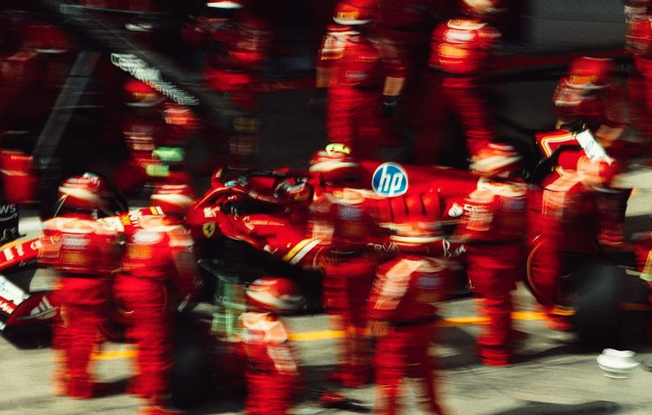

La F1 est devenue un sport de culture pop
Il y a dix ans, parler de Formule 1 passait pour un truc de passionnés un peu à part. Aujourd'hui, tout le monde a un avis sur sa course préférée. Comment un sport réputé élitiste et technique est-il devenu l'un des plus grands phénomènes de culture pop de la planète ?

D'un sport de niche à un phénomène mondial
Longtemps, la Formule 1 a souffert d'une image : celle d'un sport fermé, compliqué, réservé à ceux qui comprenaient les subtilités des moteurs et des stratégies. Fascinant pour les initiés, hermétique pour tous les autres. On regardait des voitures tourner sans toujours saisir ce qui se jouait.
Puis quelque chose a basculé. Une nouvelle génération de fans a débarqué, plus jeune, plus large, plus féminine, souvent sans aucune culture mécanique au départ. Les tribunes ont changé de visage, les audiences ont explosé, et des marchés qui ignoraient la discipline s'y sont passionnés du jour au lendemain.
Ce qui était un sport d'ingénieurs est devenu un spectacle de personnages, de rivalités, d'histoires. On ne suit plus seulement des voitures : on suit des hommes, des clans, des destins. La F1 a découvert que sa plus grande force n'était pas la vitesse, mais le récit.
Des pilotes devenus des stars
Les pilotes ne sont plus de simples sportifs cachés sous un casque : ce sont des personnalités, des icônes de mode, des influenceurs suivis par des millions de gens. On s'attache à leur caractère autant qu'à leurs performances.
Chacun incarne un rôle dans une grande fiction : le champion invincible, l'outsider acharné, le prodige insolent, le vétéran respecté. On choisit son camp, on défend son favori, on déteste son rival. La course est devenue une série dont les pilotes sont les héros.
Une industrie, une géopolitique
Derrière le spectacle, il y a une machine colossale. La F1 est une industrie qui pèse des milliards, où chaque course est une vitrine, un marché, un enjeu. Et le calendrier lui-même raconte une histoire de puissance et d'argent.
Les nouveaux circuits poussent là où coule l'argent : dans les pays du Golfe, dans les métropoles ambitieuses, partout où un État veut soigner son image sur la scène mondiale. Accueillir un Grand Prix, c'est acheter un morceau de prestige planétaire. Le sport devient un outil d'influence, une carte de visite pour des nations qui veulent exister dans l'imaginaire du monde.
Cette dimension géopolitique est rarement discutée par les fans, mais elle est centrale. La F1 n'est pas qu'un sport : c'est un théâtre où se jouent des stratégies d'image à l'échelle des États, un spectacle dont les coulisses sont aussi des salles de négociation.
La mode et la musique s'invitent
Signe des temps, la F1 attire désormais le monde de la mode, de la musique, du cinéma. Les paddocks se remplissent de célébrités, les marques de luxe s'affichent, les rappeurs citent les pilotes. La course est devenue un lieu où il faut être vu.
Ce croisement des univers nourrit le phénomène. Chaque star présente amène son public, chaque collaboration élargit l'audience. La F1 n'est plus un sport isolé : c'est un carrefour culturel où se croisent tous les mondes qui comptent aujourd'hui.
Le sport du nouveau siècle
Au fond, la F1 a réussi ce que beaucoup de sports cherchent désespérément : se réinventer sans se renier. Elle a gardé sa vitesse, sa technique, son exigence, tout en s'ouvrant au monde entier.
Elle a compris que le sport moderne n'est plus seulement une compétition, mais un spectacle total. Un mélange de performance, de récit, d'image et d'émotion. Et dans ce mélange, elle est devenue bien plus qu'une course : un véritable phénomène de culture, à la croisée du sport, du divertissement et de la géopolitique.
La F1 n'a pas gagné le monde en allant plus vite. Elle l'a gagné en apprenant à raconter des histoires.